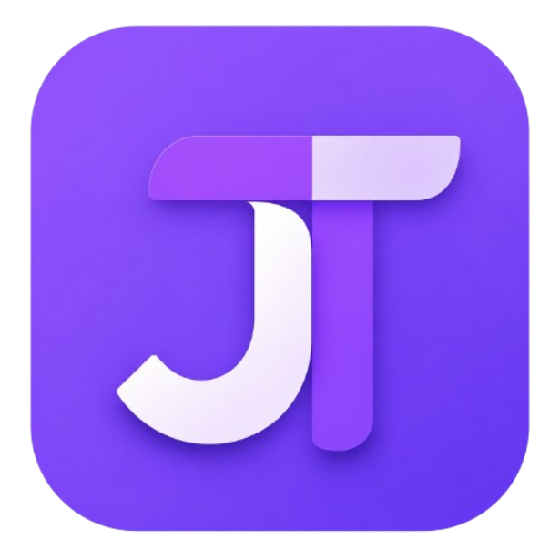
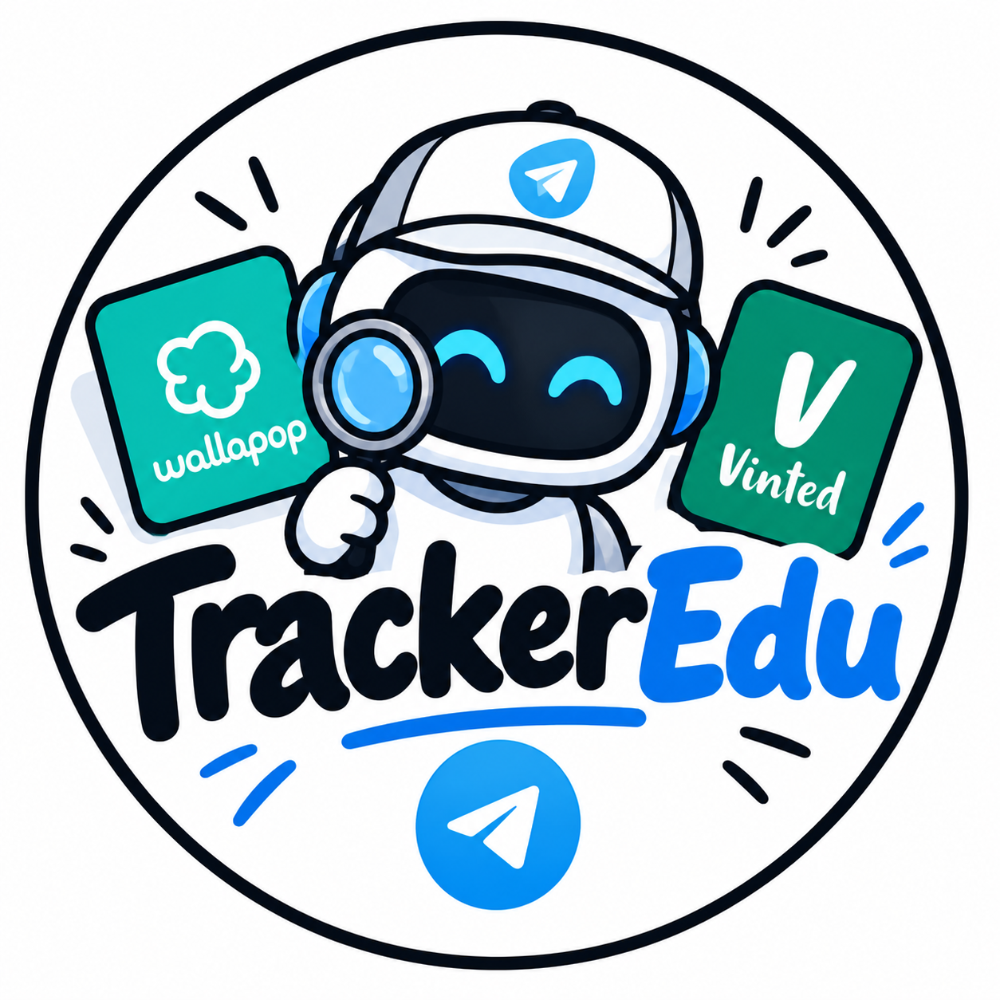
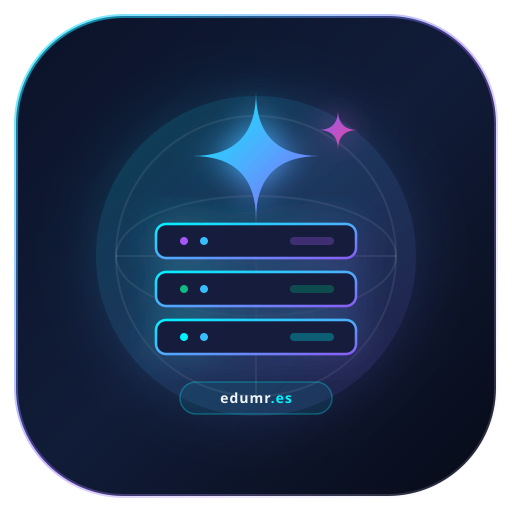
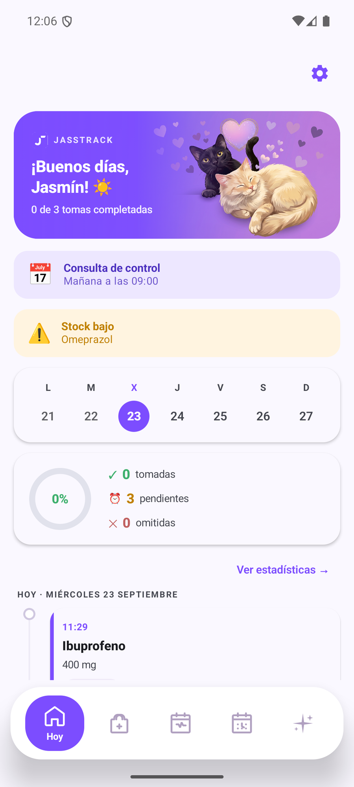
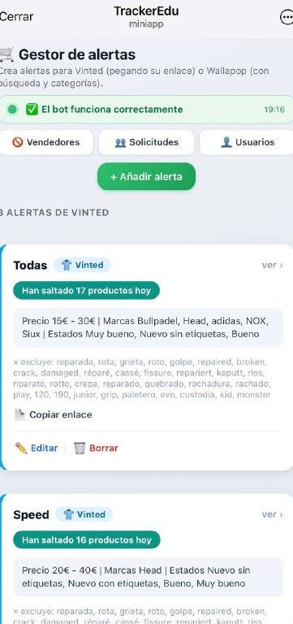

Hola, soy Edu MR
Construyo aplicaciones, automatizaciones y proyectos digitales de principio a fin, apoyándome en los modelos de IA más avanzados del momento. Todo con infraestructura propia, máxima velocidad y un diseño cuidado hasta el último detalle.
Desarrollos Propios
Soluciones creadas y puestas en producción.

JassTrack
Control inteligente de medicación y pastillas con aviso al cuidador
Aplicación Android desarrollada conjuntamente con Claude Sonnet 4.6 pensada para el seguimiento riguroso de tomas médicas. Envía una alerta inmediata a la persona cuidadora en el momento exacto en que se realiza la toma. Cuenta con control automático de stock de pastillas, asistente con IA personal, calendario de dosis y una notificación semanal de seguimiento con el balance de cumplimiento.

TrackerEdu
Bot de alertas Telegram para Vinted y Wallapop
Desarrollado con DeepSeek V4. Bot de Telegram para la detección y notificación inmediata de oportunidades en plataformas de compraventa. Incorpora monitorización constante de artículos, control y evolución de precios para detectar gangas, e integración de traducción en directo para artículos internacionales sin fricción.

Web Oficial Edu MR
VPS propio y dominio configurado a medida
Desarrollada y estructurada con Gemini 3.8 y desplegada sobre un servidor privado virtual (VPS) con gestión directa del dominio edumr.es. Configuración avanzada de zonas DNS, capa de seguridad SSL/TLS para navegación cifrada y diseño con máxima optimización de velocidad de carga.
Futmondo
La Quiniela · La Porra · La Puja
El rincón futbolero de los compañeros: La Quiniela (1X2 semanal con escudos, forma y clasificación), La Porra (resultado exacto con primas) y La Puja (subastas de los martes con contador y ganador automático). Cuentas privadas con código, puntuación y primas automáticas.

EduDownloader
Descarga música en MP3 para el USB del coche
Aplicación de escritorio para descargar música al ordenador en MP3 y pasarla fácilmente a un USB para el coche. Sencilla y rápida, pensada para llenar el pincho con las canciones que quieras llevar.
Cómo funciona JassTrack
La app de control de medicación, paso a paso. Pulsa cada punto para ver la pantalla.

Coloca aquí las capturas en img/demo/jasstrack-N.png
Cómo funciona TrackerEdu
El bot de alertas de Vinted y Wallapop, paso a paso. Pulsa cada punto para ver la pantalla.

Coloca aquí las capturas en img/demo/trackeredu-N.png